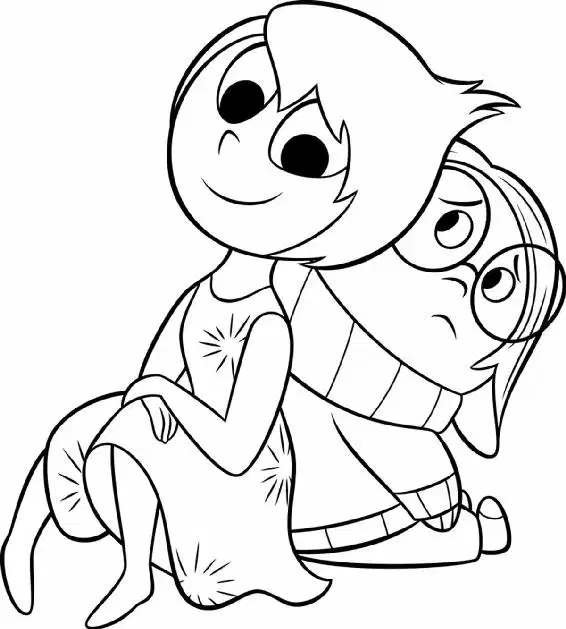

Days later, Riley’s Mind World looked very different. Headquarters was getting a major upgrade. While mind workers adjusted the console, the Emotions looked out the window, admiring the new Islands of Personality.
“Hey, I’m liking this view,” Fear said.
“Friendship Island has expanded,” Anger said. “Glad they finally opened that Friendly Argument section.”
“I like Tragic Vampire Romance Island,” added Sadness.
“Boy Band Island. Hope that’s just a phase,” Fear said, wringing his hands nervously.
“Say what you want—I think it’s all beautiful,” said Joy, just grateful that there were islands once again.
“All right,” one of the workers announced, clearing his throat. “There you go. Your new, expanded console is up and running.” The worker hit a button and the shiny new console lit up as the Emotions gazed at it in awe.
Disgust eyed one of the new buttons. “Hey, guys? What’s ‘pub-er-ty?” she asked, reading the word on the button.
Fear and Sadness shrugged as Anger checked out some new additions. “Whoa,” he said. “I have access to the entire curse word library!”
On the screen, they could see that Riley and her parents were just getting to the hockey rink. Once inside, Riley’s parents gave her some words of wisdom before the game. “Now, when you get out there, you be aggressive!” Dad said.
“I know, Dad,” said Riley.
“But not too aggressive,” added Mom.
“You know, you guys don’t have to come to every game,” said Riley. Her parents’ faces were completely painted with the team colors.
“Are you kidding? I’m not missing one! Go, Foghorns!” Dad said, making a foghorn noise.
“Go, Riley! Foghorns are the best!” shouted Mom, making a foghorn noise, too.
Riley shushed them. “Okay, okay. I gotta go.” She smiled and walked away, feeling a little embarrassed. Inside Headquarters, Joy was beaming. “Awwww,” she said.
“They love us!” Fear exclaimed.
“Yeah, Mom and Dad are pretty cool,” said Anger.
“Guys, of course they are,” said Disgust, cautioning them. “But we can’t show it!” She stepped up to the console and pushed a lever.
Inside Dad’s head, his Emotions had their faces painted, too! They cheered. “She loved the face painting!” said Dad’s Fear happily.
“Ha!” said Dad’s Anger. “Told you it was a great idea.”
Dad turned to Mom and smiled. She smiled back. Inside Mom’s mind, her Emotions also had their faces painted! “Best idea he’s had in a while,” Mom’s Anger said.
“He’s a really good guy,” said Mom’s Sadness.
Riley walked toward the ice and accidentally bumped into a teenage boy, causing him to drop his drink. She picked it up and handed it to him. “Sorry,” she said, smiling.
Inside the boy’s mind, a warning light was BLARING. All of his Emotions ran around his Headquarters in a panic. They were yelling at the same time as an alarm sounded: “Girl. Girl. Girl.”
The boy stood, stunned, unable to utter a word.
“Uhh… Ooooooo-kay,” said Riley. She walked away but looked over her shoulder and gave him one last little smile.
“All set, Riley?” asked one of her teammates as she skated onto the ice. Riley high-fived her and they skated into position.
Mom and Dad cheered like crazy from the stands as the game began.
Inside Headquarters, Joy and Sadness stood together at the new console. “All right. Let’s play some hockey!” said Joy.
As soon as the puck dropped onto the ice, Riley snapped into action, skating like a pro, with a smile on her face.
“All right, Anger, take it,” said Joy.
“Give us that puck or you’re dead meat!” shouted Anger.
“On our left! On our left!” screamed Fear.
“Let’s just try not to get all smelly this time,” Disgust warned.
Joy felt terrific. Riley had made great new friends, was doing well at school, and loved her new hockey team. Things couldn’t be better. Joy was confident that she and Sadness, along with the rest of the Emotions, would work together to help Riley live a happy life. Things might have gotten turned inside out and even upside down and around, but everything was going to be just fine.
（The End）
